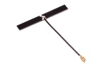
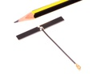
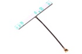

40 mm 2.4 Ghz Antenna - AN2440
Summary
Name: 40 mm 2.4 Ghz Antenna
ID: ANTE-40-X-G24-01
Hex ID: AN2440
WebPage: https://github.com/oomlout/oomlout-OOMP/wiki/ANTE-40-X-G24-01
Short URL: http://oom.lt/AN2440
Revision History: https://github.com/oomlout/oomlout-OOMP/blob/master/parts/ANTE-40-X-G24-01/
| Type |
Size |
Color |
Description |
Index |
ANTE
Antenna |
40
40 mm |
X
|
G24
2.4 Ghz |
01
|
Images



About
This part is awaiting a description.
Specifications
| Info |
Value |
| Type |
Antenna |
| Size |
40 mm |
| Description |
2.4 Ghz |
Extra Details
Spotted a mistake, want to add more? Let us know oomp@oomlout.com
All images and resources are licensed [CC BY-SA] unless otherwise stated (ie. the datasheets)